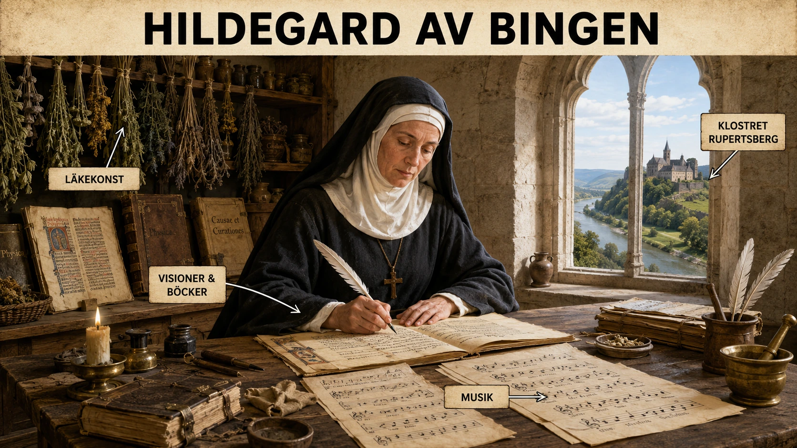

En flicka som inte skulle bli något
Tänk dig en flicka i början av 1100-talet. Hon föds i en adlig familj i det tyska området vid floden Rhen. Hon är ett av många barn, och hennes framtid bestäms inte i första hand av vad hon själv vill, utan av familjens ställning, kyrkans makt och tidens syn på kvinnor. Flickan heter Hildegard.
Hon kommer inte att bli drottning. Hon kommer inte att studera vid universitet. Hon kommer inte att bli präst, biskop eller professor. Ändå ska hon bli en av medeltidens mest lyssnade röster.
Klostret — både bur och dörr
Hildegard av Bingen föddes år 1098. Som barn skickades hon till ett kloster. Det kan låta som att hon stängdes in, men för en kvinna under medeltiden kunde klostret också vara en av få vägar till lärdom. Universitetens värld var nästan helt stängd för kvinnor. Där satt män och diskuterade teologi, filosofi, juridik och medicin på latin. Men i klostret kunde vissa kvinnor lära sig läsa, skriva, sjunga, tolka Bibeln, studera naturen och föra samtal om Gud och världen.
Klostret var alltså både en begränsning och en möjlighet. Det begränsade kvinnans liv, eftersom hon levde under religiösa regler. Men det kunde också öppna en dörr till kunskap. För Hildegard blev klostret den dörren.
Visionerna
Redan som barn sägs Hildegard ha upplevt starka visioner. Hon såg bilder, ljus och symboler som hon tolkade som budskap från Gud. I dag kan vi inte säkert veta vad dessa upplevelser var. Vissa forskare har föreslagit att hon kan ha haft migrän med synfenomen — auror och ljusbilder som hjärnan skapar — och hennes beskrivningar passar in på det mönstret. Andra betonar att visioner var ett religiöst språk som människor på medeltiden tog på stort allvar. Det viktiga historiskt är inte exakt vad visionerna "egentligen" var, utan hur Hildegard använde dem.
Hon levde i en värld där män hade makten över kyrkans lära. En kvinna förväntades vara ödmjuk, tyst och lydig. Men om en kvinna kunde säga: "Jag talar inte av mig själv, utan för att Gud har visat mig detta", då kunde hennes röst få tyngd. Visionerna blev Hildegards auktoritet. De blev hennes sätt att ta plats i en värld där kvinnor annars sällan fick tala offentligt.

Scivias — boken där hela världen får plats
När Hildegard blev äldre började hon skriva ner sina visioner. Ett av hennes mest kända verk heter Scivias, som betyder ungefär "Känn vägarna". Där beskriver hon stora religiösa bilder: kosmos, människans själ, kyrkan, synden, frälsningen och Guds ordning i världen. Texterna är inte enkla. De är fyllda av symboler — ljus, eld, hjul, byggnader och gestalter. Men de visar något viktigt: Hildegard tänkte stort. Hon ville förstå hela skapelsen som ett sammanhängande system.
Musiken
Hon skrev också musik. Och inte bara enkel musik. Hildegards sånger är bland de mest originella från medeltiden. De är ofta ljusa, svävande och ovanligt omfattande i tonomfång. I en tid då mycket musik var anonym vet vi att just Hildegard komponerade sina verk — vilket gör henne till en av de tidigaste namngivna kvinnliga tonsättarna i Europas historia. Hennes verk framförs fortfarande, nästan ett årtusende senare.
Naturen och kroppen
Men Hildegard var inte bara mystiker och musiker. Hon skrev också om natur och läkekonst. Hon beskrev växter, djur, stenar, sjukdomar och behandlingar. Hennes medicinska texter blandar erfarenhet, klostertradition, antik läkekonst och medeltida religiösa föreställningar. För oss kan vissa idéer låta främmande, men de visar hur kunskap fungerade på medeltiden: naturen sågs inte som något skilt från Gud. Tvärtom — skapelsen var full av tecken, krafter och mening.
Ett viktigt begrepp hos Hildegard är viriditas. Det betyder ungefär "grönska", "livskraft" eller "växtkraft". För henne var detta en bild av Guds liv i skapelsen. När växter grönskade, när människor levde rätt, när själen var frisk, då fanns viriditas. När synd, sjukdom eller förfall tog över, då försvagades denna livskraft. Det är ett medeltida sätt att tänka, men också ett ganska kraftfullt sätt att se sambandet mellan kropp, själ, natur och moral.
Bruksmakare med fjäderpenna
Det mest häpnadsväckande är kanske att Hildegard skrev brev till några av Europas mäktigaste personer. Hon brevväxlade med påvar, biskopar, abbotar och furstar. Hon kunde kritisera präster som hon ansåg levde fel. Hon kunde varna makthavare. Hon skrev till och med till kejsaren Fredrik Barbarossa — och tonen var inte alltid undergiven. Det betyder inte att hon hade politisk makt som en kung eller biskop, men hon hade moralisk och religiös auktoritet, och även mäktiga män var rädda om sitt rykte inför Gud.
Hon gjorde också något nästan ingen annan kvinna på hennes tid gjorde: hon predikade offentligt. Hon for på fyra större predikoresor genom det tyska området och talade i städer och kloster, ofta direkt till präster, om kyrkans förfall och behovet av reform. För en kvinna att stå upp och tilltala män, präster, en hel församling — det var nästan otänkbart. Att Hildegard kom undan med det berodde på en sak: visionernas auktoritet. Hon talade inte för egen del. Hon talade för Gud, hävdade hon. Och eftersom kyrkan inte vågade säga emot Gud kunde de inte heller säga emot henne.
Hennes eget kloster
Hildegard grundade dessutom ett eget kloster vid Rupertsberg nära Bingen. Det var inte bara ett religiöst beslut, utan också ett ledarskapsbeslut. Hon ville skapa en plats där hennes nunnor kunde leva och verka under hennes ledning. Hon hamnade i konflikter med manliga kyrkliga ledare — abbotar som inte gärna släppte ifrån sig en så framstående person — men hon drev ändå igenom sin vilja. Det visar att hon inte bara var en stillsam visionär. Hon var också organisator, författare, ledare och strateg.
Vad Hildegard visar och vad hon avslöjar
För elever som vill förstå medeltiden på djupet är Hildegard ett perfekt exempel på att historien inte alltid följer enkla mönster. Ja, kvinnor var underordnade män i många sammanhang. Ja, universitetens värld var nästan stängd för kvinnor. Men nej, kvinnor var inte alltid passiva eller osynliga. Vissa kvinnor hittade vägar till inflytande genom de institutioner som fanns. För Hildegard var den vägen klostret.
Hon visar skillnaden mellan formell utbildning och verklig kunskap. Hon hade ingen universitetskarriär. Hon blev inte professor. Men hon skrev, undervisade, komponerade, tolkade naturen, ledde nunnor och påverkade mäktiga män. På sätt och vis blev hon ett levande bevis på att kunskap kunde växa även utanför universitetens portar.
Men hon visar också orättvisan. En man kunde gå via skola, universitet och kyrklig karriär. En kvinna som Hildegard behövde tala genom visioner, helighet och klosterliv för att bli hörd. Hon kunde bli en röst i Europa — men vägen dit var smalare, svårare och mer beroende av att hennes ord uppfattades som gudomligt inspirerade.
Rösten som inte tystnade
Hildegard dog år 1179. Men hennes röst försvann inte. Hennes musik framförs fortfarande. Hennes texter läses fortfarande. Hennes liv används fortfarande som exempel på kvinnlig bildning under medeltiden. År 2012 förklarade påven henne dessutom till kyrkolärare — en av endast fyra kvinnor som någonsin fått den titeln. Nästan 900 år efter sin födelse fick hon alltså formellt ta plats i den lärdomstradition som inte ville släppa in henne medan hon levde.
Hon var inte ett universitet. Hon var inte en del av universitetens manliga värld. Men hon blev något annat: en lärd kvinna som gjorde klostret till sin skola, sitt skrivrum, sin scen och sitt maktcentrum.